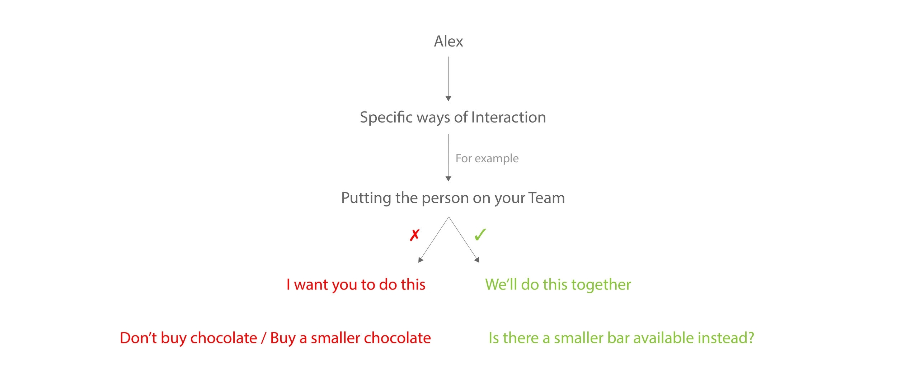
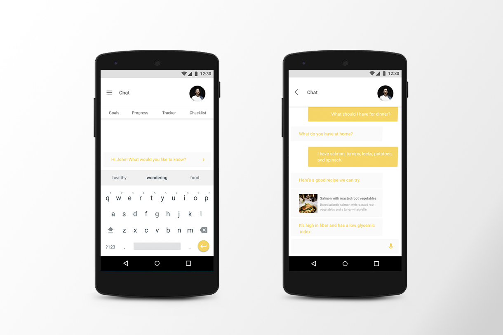
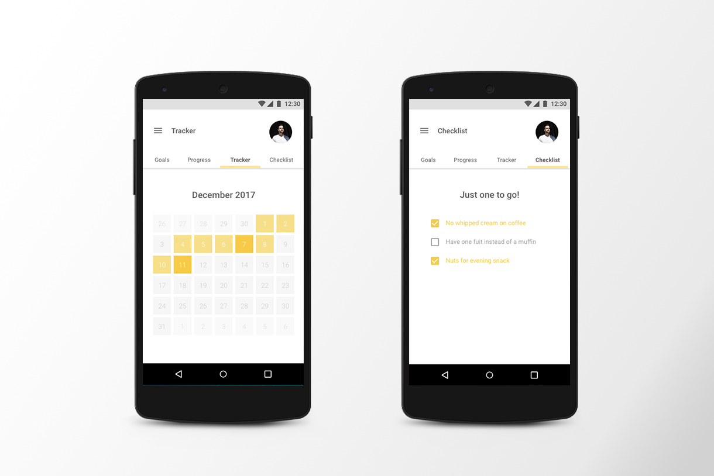

Artificial Intelligence based digital personal assistant to help achieve long-term goals using Behavioural Sciences
PROJECT TYPE: INDIVIDUAL
TEAM: SRISHTI JOHARI
YEAR: FALL 2017
SUBJECT: MAJOR STUDIO 1
ARTIFICIAL INTELLIGENCE, MACHINE LEARNING, INTERNET OF THINGS, DIGITAL ASSISTANT, UBIQUITOUS COMPUTING
BEHAVIOURAL SCIENCE, PSYCHOLOGY, HUMAN BEHAVIOUR, HABITS AND ADDICTIONS, GOALS, HEALTH, PRODUCTIVITY
There are some habits that are so engrained in people, either by the society since they were young, or by sheer habituality of said practices through the years, that it becomes difficult for people to break out of them even when they want to. Long-term goals that seem to need a long time and effort to achieve often get ignored by people for reasons including, but not limited to, lack of motivation, no perceivable results to efforts being put in, and sometimes, not even knowing where to start. Alex is a cross-platform AI system that uses behavioural sciences to help people achieve these long-term goals on a personal, societal, and environmental level by guiding users through small, achievable, short-term goals that lead to big impact in the long-term.
A cross-platform digital personal assistant with artificial intelligence capabilities that helps users achieve their long-term goals by breaking them down into daily, small, achievable steps. It tracks user progress and modifies the schedule and approach to create the most effective strategy and plan to help the user reach their goal. It seamlessly integrates in the users life and intervenes and offers suggestions at the moment when it actually matters to remind / motivate the user to accomplish his / her goals.
Alex interacts with the users in specific ways such as:
To make Alex as less intrusive in the user’s life as possible along with making it more effective, the system would use data such as profile information, current location, time, calendar schedule, and general rhythms and patterns of the user to help it formulate the most effective plan tailored uniquely to each user and also help reduce the input that the user has to give to the system for it to function. Profile - age, gender Location - if at grocery store, reminds you to get healthy food if goal is to lose weight Time - knows when you leave for work; remind to carry keys, weather, etc. Calendar - looks at schedule to give recommendations Smart AI - finds patterns and predicts when you go shopping
Being a cross-platform AI assistant, Alex would be cloud-based, connected to the user through a cloud account that is synced with the user’s electronic internet-connected devices such as smartphones, laptops, smart home systems, and cars. The primary and default method of interaction between the user and the assistant would be through voice i.e. the user could ask questions to Alex by talking to it, and Alex would give suggestions and answer queries by voice. However, the user could choose to use a text- based “chat” feature to talk with the Alex through an app on their smartphones, and could also receive notifications on their mobiles instead of voice commands.
 